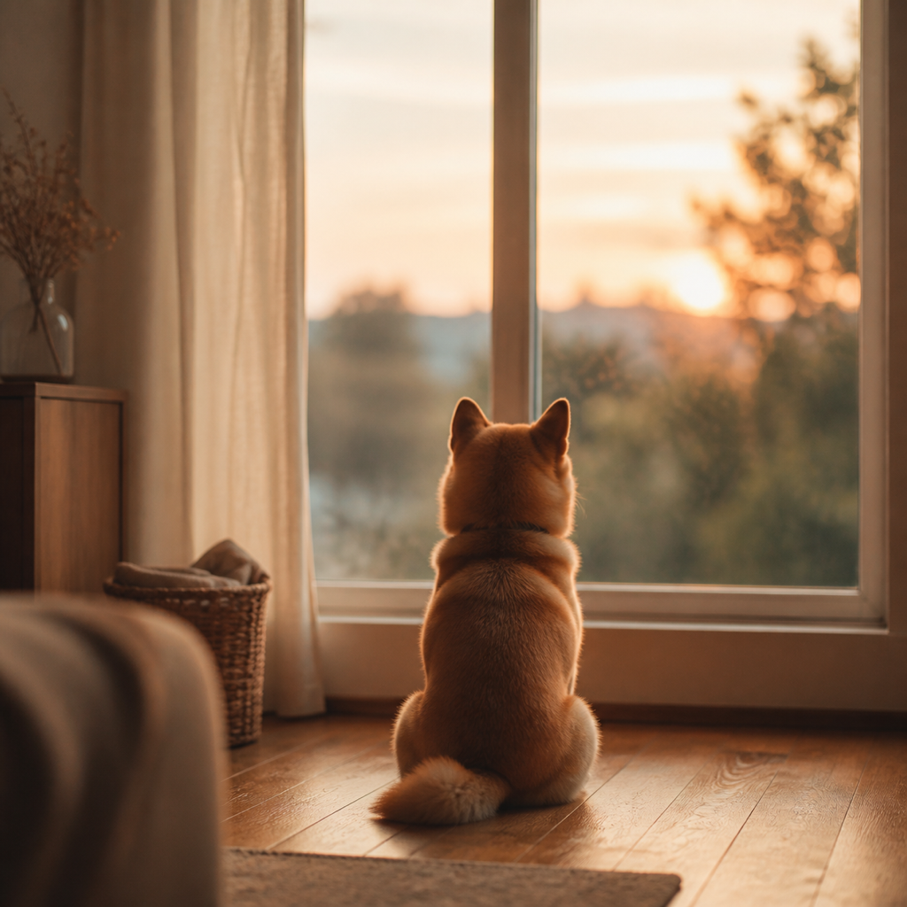
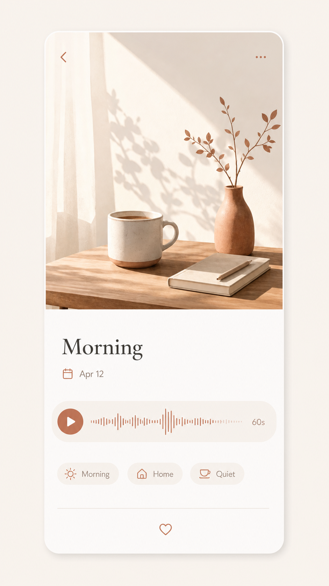
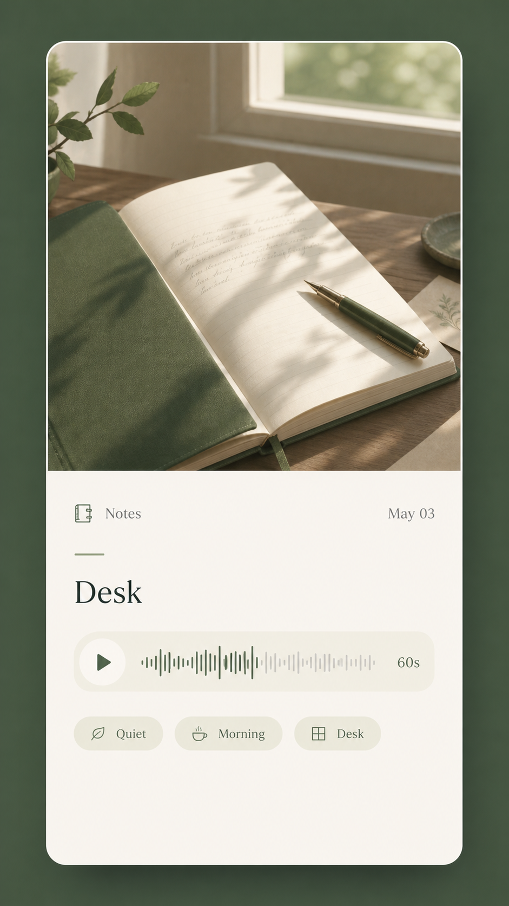
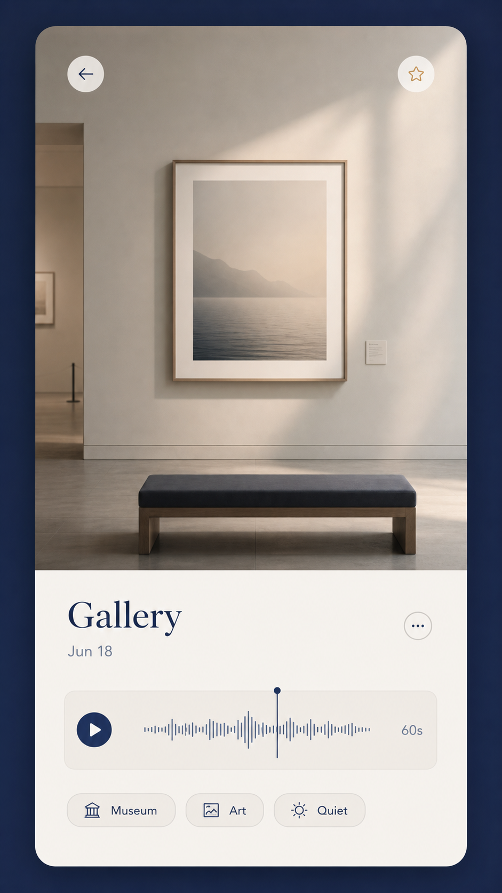

「まま」「ぱぱ」と初めて呼んだ声。
舌足らずで、あどけなくて、世界で一番かわいかった声。
子どもはあっという間に大きくなります。
はっきり喋れるようになった瞬間から、その幼い響きは
もう二度と聴けません。
ソファで丸まって眠る音。ドアを開けたときの鳴き声。
その子がいてくれる今、という時間には終わりがあります。
写真は残る。でもあの声は？ あの息づかいは？
祖父母の笑い声。遠方の親の「元気か？」という電話越しの声。
年に数回しか会えない人の声を、あなたは覚えていますか。
人との時間は、気づかないうちに「最後」になっています。
旅先で聴いた波の音、異国の市場のざわめき、二人で笑った瞬間。
同じ場所に戻っても、あの日と同じ音はもう鳴りません。
記憶は薄れるが、録音は薄れない。
写真を撮る「ついで」に、60秒だけ録音する。
それだけで、10年後に「録っておいてよかった」と思える
記録が生まれます。
写真アプリ
視覚のみ
Echo Photo
写真＋音声
ボイスメモ
音声のみ
タップ一つで録音スタート。マイクボタンを押しながら、子どもの笑い声でも、旅先の波音でも。 写真とセットにして「音つき思い出」として保存できます。
写真をタップして音声を再生。視覚と聴覚が同時に蘇る体験は、 テキストのメモとは全く異なる感動があります。
写真とBGMが合わさったMP4動画をその場で生成。 Instagramストーリーにもリールにもフィードにもすぐにシェアできます。
Share preview
Video vs Echo
動画
撮るのは簡単。
見返すのに5〜30分。
気づけば開かなくなる。
Echo Photo
写真をタップするだけ。
数秒で、あの音。
毎日自然に見返せる。
記録が「見返されない」なら、存在しないのと同じ。
No. 01
お子さんの成長を残したい方
乳幼児期〜小学生のお子さんをお持ちの親御さん
写真は毎日撮っているけれど、声や笑い声は残せていない—— そう感じているお父さん・お母さんに。 しゃべれるようになる前の、あの頃の音を。
No. 02
ペットと暮らしている方
犬・猫など愛するペットのいるご家庭
シニアになって寝ている時間が増えてきた、 元気だった頃の声を残しておきたい。 一緒にいられる今の音を、ちゃんと形に。
No. 03
旅や記念日を深く残したい方
写真だけでは物足りなさを感じている方
あの場所の空気感、二人で笑った瞬間の声。 写真を見返すだけではよみがえらない記憶を、 音と一緒に立体的に残したい方へ。
このアプリを作った理由
「父が亡くなる2年前、電話でよく話していました。たわいもない話ばかりで、 録音しようなんて思いもしなかった。今でも父の声を正確に思い出せるか、 正直自信がありません。
もし当時、写真を撮るついでに30秒だけ録音していたら——そう思って このアプリを作り始めました。特別なものを残すのではなく、 日常の音を意図して残すための道具です。」
— Echo Photo Album 開発チーム
5つのシーンタグで、あとから探せる。
Scene 01育児
Scene 02旅行

Scene 03ペット
Scene 04記念日
Scene 05日常
Sound Encyclopedia
シーンの枠を超えた使い方も。愛車のエンジン音、猫の鳴き声、波音——写真と音を集めたあなただけの音図鑑が作れます。正解はありません。
あなたの記録スタイルに合わせて。Journal・Galleryはプレミアム限定。

温かみのある粘土色。日常の思い出を穏やかに。

深い緑色の落ち着いたノートのような質感。

美術館のような静謐なネイビー。思い出をギャラリーに。
ご不明な点があればいつでもお問い合わせください
Echo Photo Albumはクラウドに一切送信しません。写真・音声・メモはすべてローカルに保存。 GPS情報は写真選択時に自動で削除されます。
完全ローカル
インターネット不要で動作。データはそのまま、あなたの手元に。
GPS自動削除
位置情報は保存しません。写真のEXIFからも選択時に自動除去。
広告・解析なし
追跡SDKゼロ。あなたの使い方を見ている人は、どこにもいません。
無料プラン
¥0
今すぐ始められる
Privacy Policy
最終更新日：2026年5月29日 ／ 運営：StratAIX
StratAIX（以下「当社」）は、Echo Photo Album（以下「本アプリ」）における利用者の情報の取り扱いについて、以下のとおり定めます。
本アプリは、利用者が作成・選択した以下の情報を取り扱います。これらはすべて利用者の端末内にのみ保存されます。
本アプリは、利用者のデータを当社や第三者のサーバーに送信しません。クラウドへの自動アップロードも行いません。データの共有（動画の書き出し・他アプリへの送信）は、すべて利用者自身の操作によってのみ行われます。
写真に含まれる位置情報（EXIFメタデータ）は、本アプリに取り込む際に自動的に削除します。
本アプリは、個人を特定できる情報を自動的に収集しません。広告SDKやアクセス解析ツールは組み込んでいません。
本アプリは買い切りのプレミアム解除（¥500）にApp Store / Google Playの課金システムを使用します。決済情報は各プラットフォームが処理し、当社は保持しません。各社のプライバシーポリシー（Apple / Google）が適用されます。
権限は該当機能の利用時にのみ要求します。拒否された場合、その機能は制限されますが、他の機能は引き続きご利用いただけます。
本アプリは13歳未満のお子様を対象としていません。お子様の情報を故意に収集することはありません。
本ポリシーを変更する場合、本ページへの掲載をもってお知らせします。
本ポリシーに関するお問い合わせは support@strataix.net までご連絡ください。
Terms of Service
最終更新日：2026年5月29日 ／ 運営：StratAIX
本利用規約（以下「本規約」）は、StratAIX（以下「当社」）が提供する Echo Photo Album（以下「本アプリ」）の利用条件を定めるものです。利用者は本規約およびプライバシーポリシーに同意のうえ本アプリを利用するものとします。
本アプリのデータはすべて利用者の端末内に保存されます。アプリの削除・端末の紛失・故障等によりデータが失われた場合、当社は復旧の責任を負いません。大切なデータは、動画の書き出し等により定期的に外部へ保存することを推奨します。
本アプリに関する著作権その他の知的財産権は当社または正当な権利者に帰属します。利用者が本アプリで作成したコンテンツ（写真・音声・動画）の権利は利用者に帰属します。
当社は本規約を変更できます。変更後の規約は本ページへの掲載をもって効力を生じます。変更後も本アプリを継続利用する場合、変更後の規約に同意したものとみなします。
本規約は日本法に準拠します。本アプリに関する紛争は、東京地方裁判所を第一審の専属的合意管轄裁判所とします。
本規約に関するお問い合わせは support@strataix.net までご連絡ください。